Nomads · the design, illustrated · October 2026
Nomads
People wake on an island that grew itself, knowing almost nothing, and work the world out by trying, watching and being told.
01What Nomads is
A life sim where nobody is told how the world works. Jev is their judgment; code is the physics.
Five people come ashore on a generated island 19.2 km across. They can walk, pick things up, eat, sleep and talk. They don't know that two hard stones struck over dry grass throw a spark, that a sharp stone lashed to a stick fells a tree, or that berries pushed into the ground come up as bushes three days later. Everything past walking and eating is know-how they have to find by trying, notice by watching, or be taught by someone who found it.
Two things share the work. Code is the physics: materials are bags of properties, a handful of verbs act on them, and a few rules (force, sharpness, friction, heat, binding) decide what happens. Jev is their judgment: TypeSafe's calibrated judgment model picks what a person would most likely do, what they'd think to try, what they make of a failure, and how they feel about each other. Jev can't write text; it picks, rates and answers yes or no with odds. Templates turn what happened back into words.
Mara noticed sparks when the stones struck.
That line is the whole game in small: an attempt, a physical result the code worked out, a clue the person kept, and a story the chronicle can tell. Over days, those clues become beliefs, the beliefs become theories about when things fail, and the theories are tested, taught, gossiped and sometimes wrong.
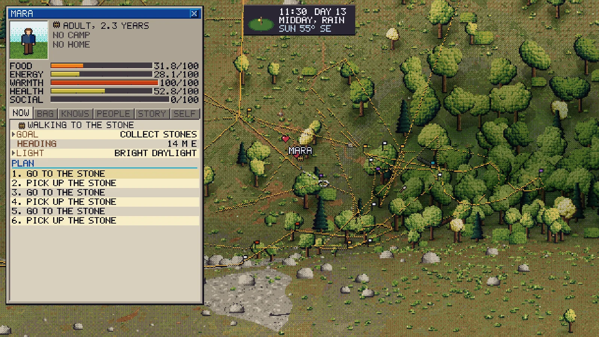
What is built and what is planned
DESIGN.md is the engineers' record and runs ahead of the code in places. Every chapter here carries a marker for each system it covers. The board below is the whole picture at a glance.
| System | Status | Note |
|---|---|---|
| Island generator | Built | Uplift, erosion, ice, climate, rock, soil, water, plants by niche |
| Sky, sun, moon, light and air | Built | Fields the sim and the renderer share |
| Needs, traits, relationships, families | Built | The 100 traits are the words Jev reads |
| The 111 skills | Planned | Crafts appear and level up with use; the long list is the eventual set |
| Materials, verbs and physics | Built | No recipe book: properties meet rules |
| Jev rulings as world laws, naming | Built | Only Jev writes new laws; offline, nothing the rules don't cover comes of an attempt |
| Theories of failure and tests | Built | Revised October 5: the latest tries count most, blame is judged like for like, one theory is tested at a time |
| Tech chain, stone to metal | Partly built | The physics for every step is in; carrying water is deferred |
| Camps, precedents, customs, leaders | Built | Voting, roles and feasts are planned |
| Animals, plants, fire, decay, disease, weather | Built | All read fields and cues, never a season's name |
| A weekly chronicle written by a language model | Planned | Optional; the sim never depends on it |
| Jev and the offline brain | Built | Every gate runs offline; Jev on demand |
| Trace, debug API, history page, inspector | Built | |
| Play page renderer | Built | The real sim in the browser, every object drawn |
| Learning tests: probes, gate, whole worlds | Built | Every change is held to the last good build; the bar only rises |
02The island
An island that makes itself from rock, rain and time. Nothing on it is placed by hand: every lake, wood and flint nodule is where the fields put it.
- Built generator, rock, soil, water, plants, snow
The island is 19.2 km across, cut into tiles of 150 m for the game's rules and sampled much finer for water and ground. On seed 1 it holds about 3.3 million grown things, 870,000 of them trees. They live in compact arrays until someone looks at a tile, so the sim never has to hold them all as objects.
Rock first, then uplift against erosion
Two fields are laid down under the island together: how hard the rock is, and its chemistry. They make five rocks: mudstone, sandstone, limestone, granite and basalt, each with its own permeability, the soil it weathers to, how much nourishment it releases, and how often its stones hold flint or iron.
Then the land rises a little each step while streams cut down by the water they carry, which is the rain that runs off rather than soaking in. Slopes creep smooth, each rock at its own pace, so hard rock is left standing as the ranges and limestone and sandstone keep broad dry uplands. Ice then scoured the big valleys into troughs over soft rock and left hard rock as sills; the lakes lie behind them. Peaks end up 250 to 450 m high.
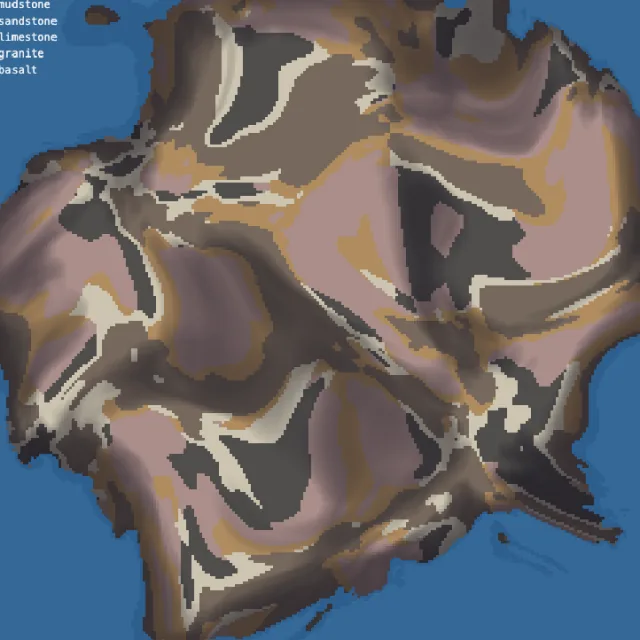
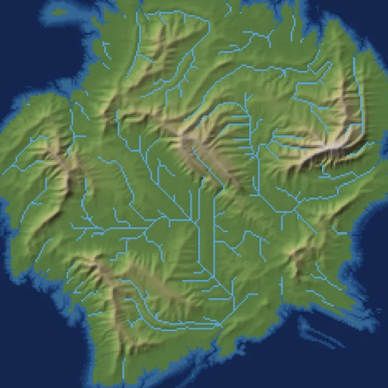
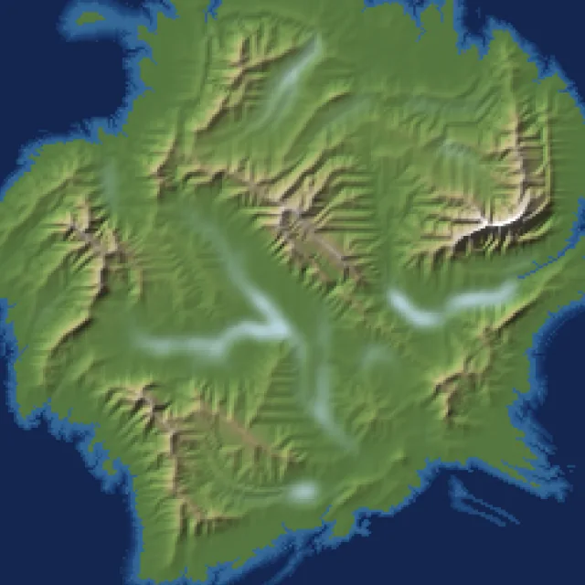
Climate, water and soil
The generator sums a year of weather. Air off the sea rises over the hills, cools and rains out, and behind them it sinks and dries. Each slope gets the sun each season's cloud lets through, less the hills' shadows. Snow lies where the winter stays cold enough, inland and up high, never on the mild coasts. Evaporation follows sun, warmth, wind and damp air.
What the plants leave soaks into the rock as far as the rock lets it and runs off for the rest. Groundwater comes out in springs and through stream beds, which keeps some streams running all summer while the ones rain alone feeds run dry. A stream's bed is cut to its wettest season; the water in it now rises after rain and can drop below a trickle, and a dry bed can't be drunk from.
The soil is the rock's weathering, with silt on the valley floors and sand on the shores. Rain leaches it sour unless the rock keeps it sweet, as limestone and basalt do. Its fertility is the rock's nourishment as far as acidity, depth and waterlogging allow, and it changes in play: a burn's ash and dung feed it, taking what grows draws it down, and both fade over weeks.
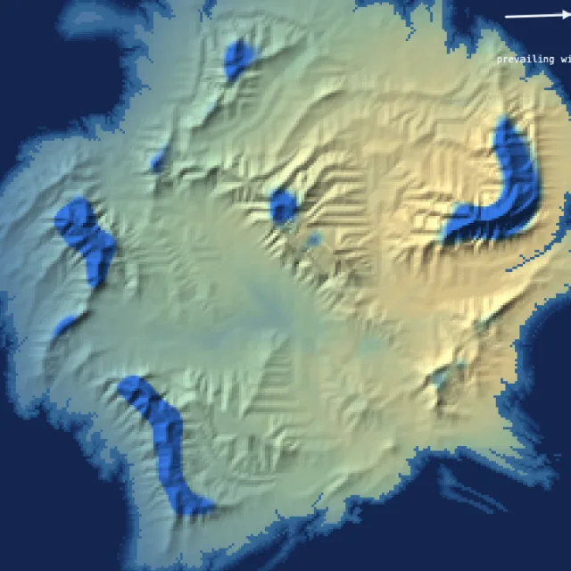
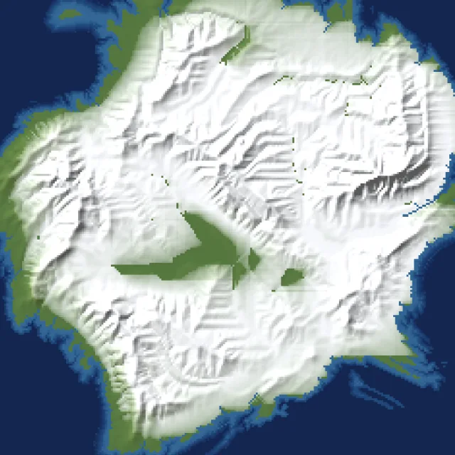
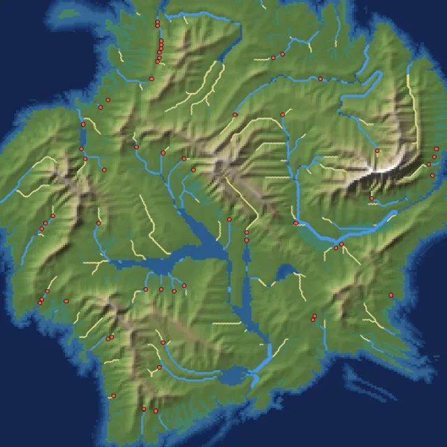
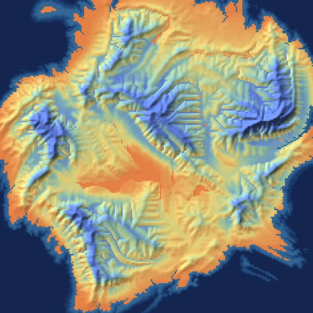
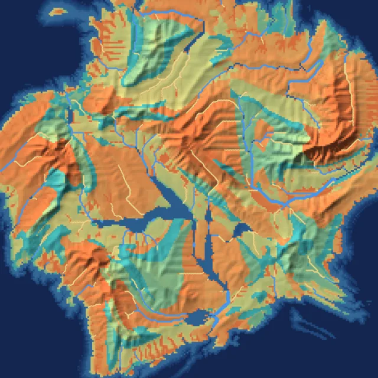
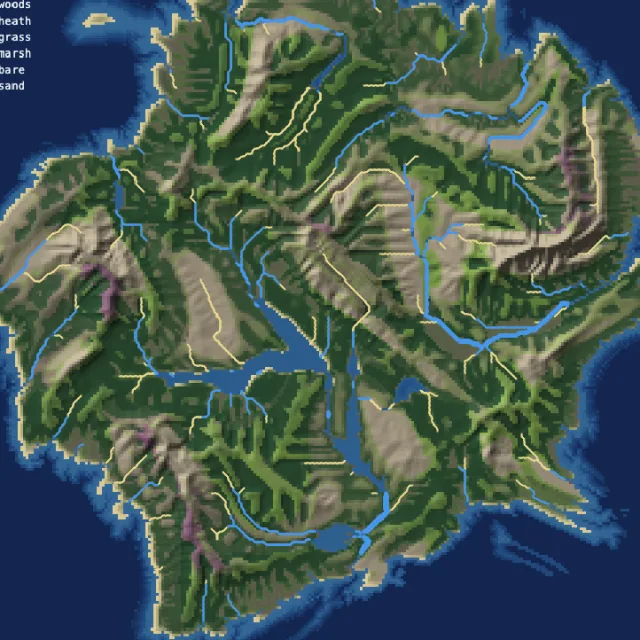
Plants by niche
Every plant has a niche: a response curve over each thing it answers to (summer warmth, winter cold, the soil's water through the season, waterlogging, acidity, fertility, light, wind, salt, soil depth). Its fit at a place is the product of its curves. The generator draws plants by fit and vigour, trees in the open sky, shrubs in what the crowns leave, low plants in the light that reaches the floor. Nothing says where a plant grows: woods, heath and marsh are just the places where one kind wins.
The same rule runs in play. Rules for plants and animals read fields and cues (the air's warmth, the day's length, the soil's water now), never a season's name or a tile class. Flint, ore and clay follow the rock: flint went from 45% of all boulders to between 2 and 9% by island, so some islands wake their people 250 m from the nearest.
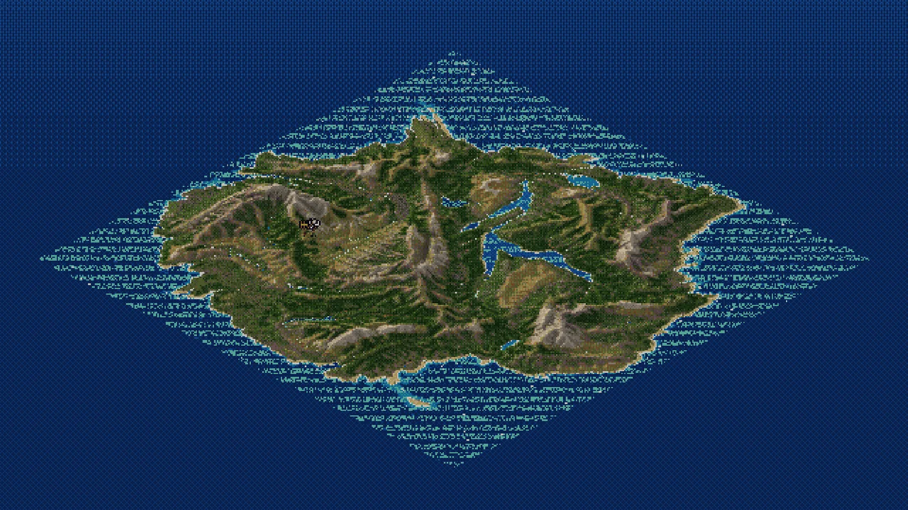
The generator's first layers (from the generator write-up)
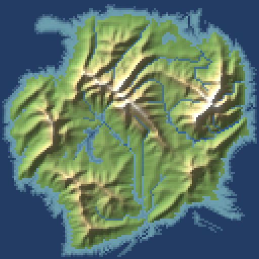
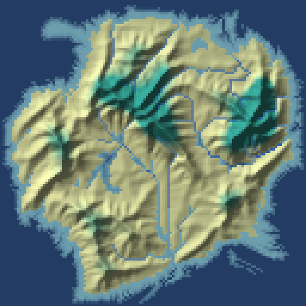
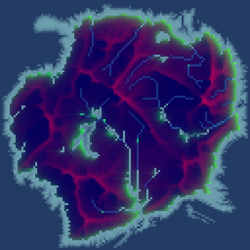
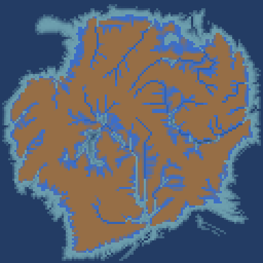
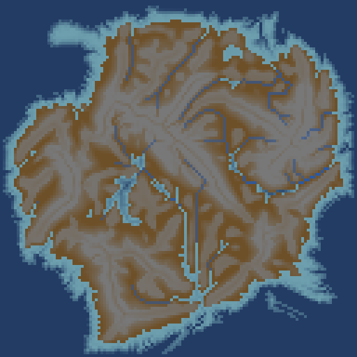
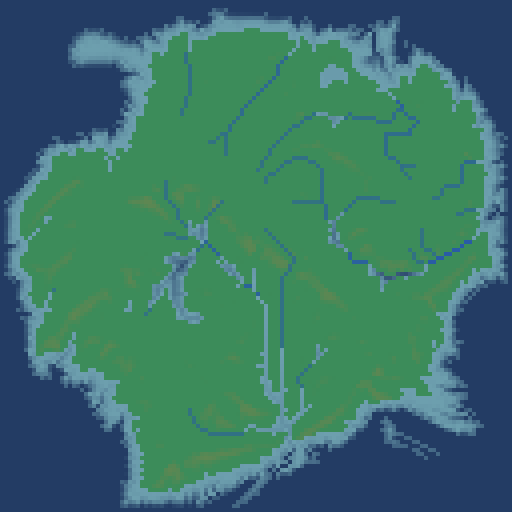
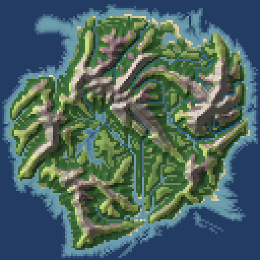
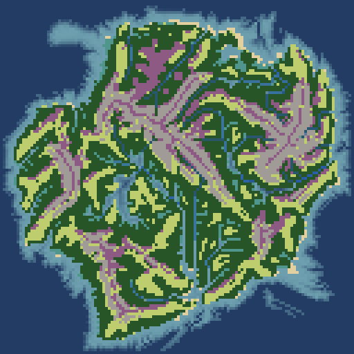
03Time, sky, light and air
A 40-day year under a real sky at 52° north. Light and air are fields, worked out at any point, and people see, work and get cold by them.
- Built clock, sun and moon, light, air, weather
A tick is five minutes, so a day is 288 ticks; people walk about 2 m a tick, which makes 300 m half a day's errand. The year is 40 days, four seasons of ten. The sun's path swings with it: a midsummer noon stands 61° up and the day lasts 16.5 hours; a midwinter noon stands 15° up and lasts 7.5. The moon waxes over 29.5 days. Night is the sun more than six degrees under the horizon.
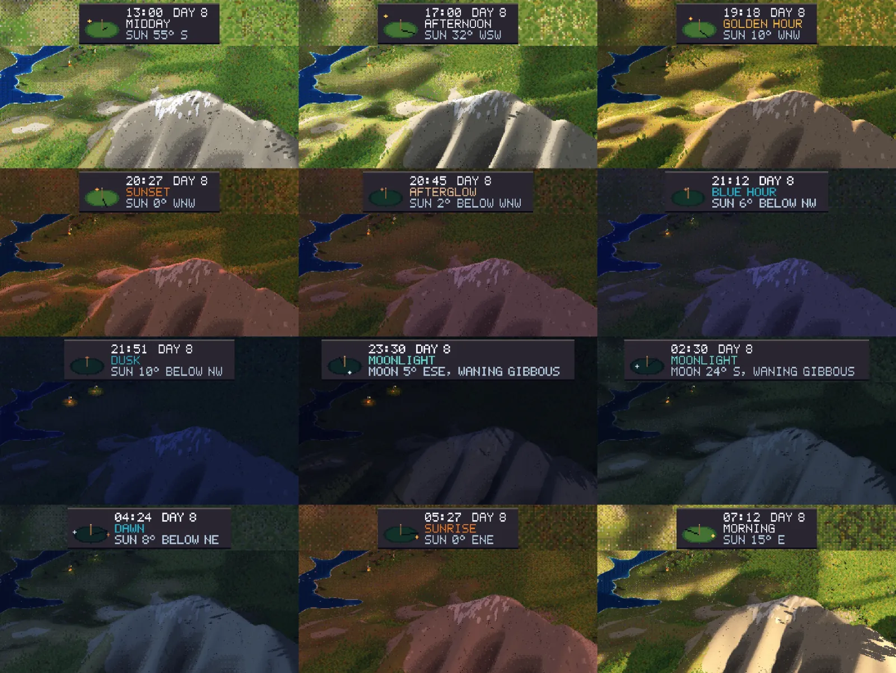
Light is a field
Every point of the island has a light level, as it has moisture: the sun's beam and the sky's glow, the moon and the stars, less cloud, less hills that hide the beam, less the crowns of the trees overhead, plus what fires and lamps throw. A campfire gives 60 lux at a metre; a lamp 12. Nothing is stored, so felling a wood or lighting a fire changes it at once.
People live by it. In the dark they see a fraction as far, walk and work slower and fumble, and plan only around what they can see (their home, the water and any fire excepted), so nobody sets out to forage or hunt at night. A thick wood goes dark an hour before open ground does. A hungry wolf stalks a lone person out in the dark.
Air and wind chill
Every point has its own air too. The weather is the island's: the day's mean at sea level, a swing over the day that follows the sun, and a wind off the open sea that rises with cloud and storm. A place takes it through what the generator found there. It is colder with height, milder by a coast the sea air blows in over, warmer on slopes the sun favours, and on still, clear nights the cold slides off the slopes into the hollows. People lose warmth by the wind chill, not the air alone, except inside walls. Frost freezes the lakes whatever the season, and a thaw drops whoever is standing on the ice into the water.
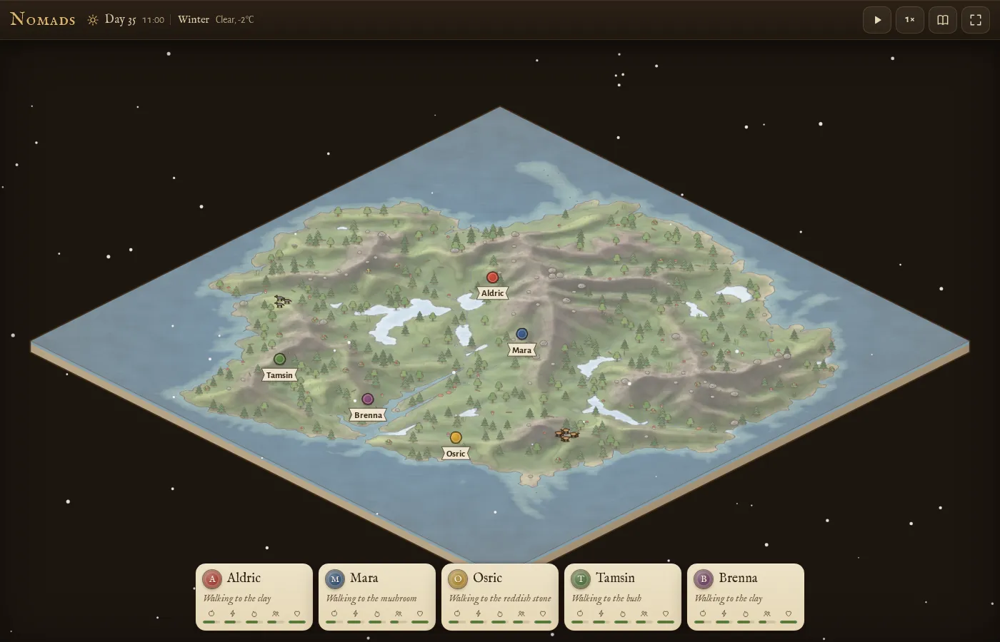
04People
Each person is a body with needs, a handful of traits in words, and a web of remembered dealings with everyone they've met.
- Built needs, traits, relationships, families, ageing
- Planned the 111 skills
A person has five needs (food, energy, warmth, health and company), five to eight traits from a list of 100 (calm, hot-tempered, curious, greedy, observant, superstitious), and desires. Traits are the words Jev reads when it judges what someone would do; a loner keeps to themselves, the greedy steal, the hot-tempered pick fights.
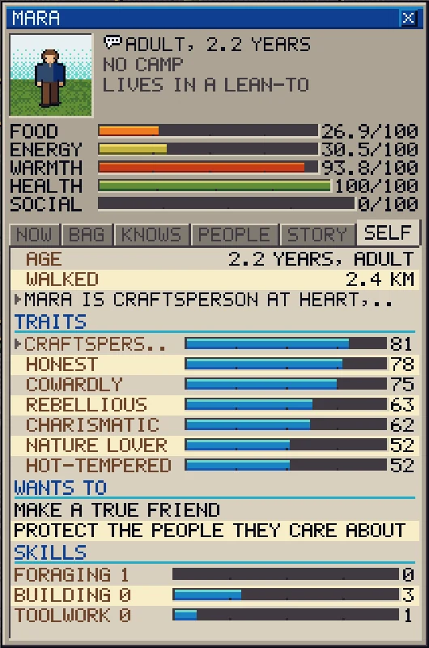
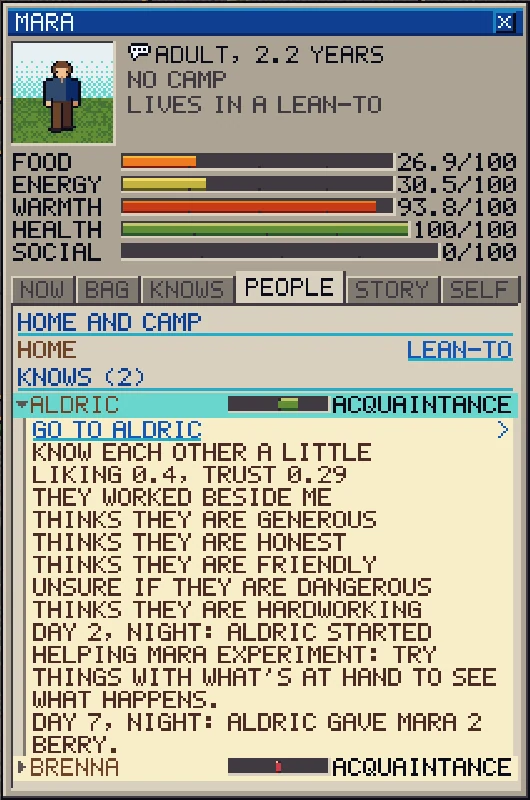
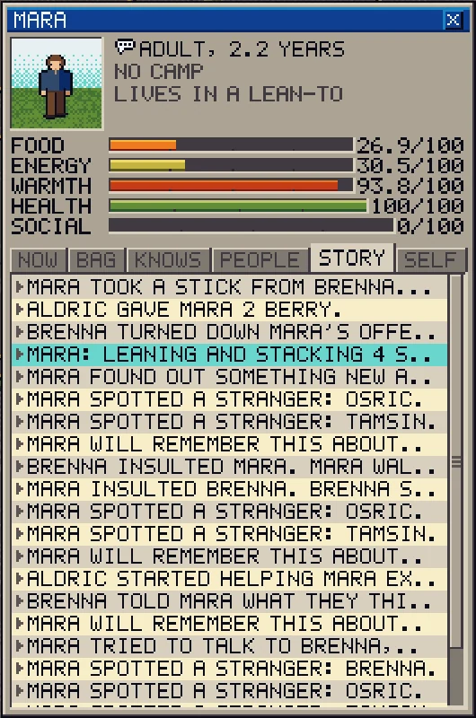
Relationships with lore
Every dealing between two people is recorded as an event and rendered by a template: "Day 3: Mara gave me 2 berries when I was starving." From those, each person keeps, for everyone they know:
- Feeling and trust, moved by how each event lands, scored by Jev.
- Bonds from a closed list (saved my life, stole from me, shared a fire, taught me, sweetheart, blood feud), each with a weight that fades at its own speed: a theft is remembered longer than a shared meal.
- A label: stranger, acquaintance, friend, confidant, rival, enemy, lover, mentor, apprentice, kin or leader.
- Beliefs about the other's traits, each a yes or no with odds from Jev ("Is Mara generous?"), which can be wrong.
- Gossip: when A talks to B about C, B's beliefs about C move toward A's, weighted by how much B trusts A. Reputation spreads that way, and so do lies.
- A favour ledger, kept by code: favours done minus favours received. Debt and resentment fall out of it without any Jev call.
How one relationship reads (Mara on Aldric, day 8)
Aldric: acquaintance; they know each other a little. Liking 0.4, trust 0.29. They worked beside me. Thinks he is generous, honest, friendly and hardworking; unsure if he is dangerous. "Day 7, night: Aldric gave Mara 2 berry."
Families, ageing and death
A year is 40 days. People are children under one year, adults to five, then elders, and old age starts killing after six and a half. Sweethearts who both like each other, eat well and share a home can conceive in the evening, and ten days later a child is born with a mix of their parents' traits plus one of its own. Children walk at half speed and learn by watching twice as fast, so what a family knows passes down only if the young stay close.
A death leaves a grave; belongings fall to the ground and homes stand empty for anyone to claim. Close friends and kin grieve. Knowledge never taught is gone. When the land is nearly empty, strangers wander in knowing nothing and find the tools and homes of the dead.
Drives and care
A starving or freezing person skips deliberation and goes for food or warmth, or huddles against the nearest body. Anyone can choose to tend someone who has collapsed, warming and feeding them back to their feet, which tends to leave a lasting bond. Once a day dislike fades, slower for the vengeful, and time spent near someone slowly breeds familiarity.
Skills, the long plan
There is no fixed skill list at the start. A craft (stonework, firemaking, pottery) appears on a person's page the first time they learn something in it, and it levels up with use. The 111 skills in DESIGN.md, from foraging and knapping to law, astronomy and runecraft, are the eventual list of crafts, to fill in as the world's physics grows. Most of them don't exist in play yet.
05How people come to know things
There is no recipe book. Materials have properties, a few verbs act on them, and people learn what the rules do by doing, watching and being told.
- Built materials, verbs, physics, tinkering, laws, naming, teaching
Materials are bags of properties
Every item carries properties with strengths from 0 to 1: hard, sharp, heavy, long, flexible, fibrous, binding, flammable, edible, toxic, plastic, container, insulating, plus states like dry, wet and hot. Two stones are the same item until one gets chipped. A tree is a standing mass of wood with an integrity and what it breaks into (logs, branches, bark); a boulder breaks into stones, a dead deer into meat, hide and bone.
A few verbs and the physics rules
There is no chop, mine or butcher. People strike, press and rub, join, heat and wet, shape, move and consume, and what happens depends only on the materials:
- Damage from a strike is force times focus, less the target's toughness. Force comes from the held thing's weight and length plus the person's strength; focus comes from sharpness.
- Recoil: force the target doesn't absorb comes back. A fist on a tree hurts; a brittle tool chips.
- Friction builds heat with pressure and speed; enough on something dry and flammable makes an ember.
- Heat past a material's threshold changes it: wet to dry, raw to cooked, clay to fired.
- Joining: a joined thing takes its parts' properties by where they sit, and is only as strong as its weakest joint.
| Held | What happens |
|---|---|
| Nothing | Almost no damage; their hand hurts and they give up |
| A stone | Slow; most of a day, and the stone may split |
| A sharp stone | Faster, but it's short, so there is little force |
| A sharp stone bound to a stick | Fast: most of the force is focused; the binding may loosen |
| A heavy sharp thing nobody designed | Also works, by the same rule |
Nothing is left to luck in whether a try comes off. It follows from what anyone trying could notice: what they hold and what it's made of, what they set out to do, the weather and the spot, a fish in reach, how far off the prey is. Dice decide only how much or how good: how many fish a basket brings up, how bad a sickness is, where a throw that falls short lands. Stone struck on stone over tinder held under the blow throws sparks, and the tinder catches once enough have fallen into it (nine blows of plain stone, three of flint), unless it isn't fine and dry or the rain is on it; struck with nothing under the blow, it is knapping, and a flake comes off once the blows add up. Fishing catches whenever a fish is in reach and never otherwise, which anyone fishing can see, so "no fish close by" is a condition of its own. A throw within reach hits. Food rank enough makes anyone who eats it sick, every time. Fire spreads to what's beside it once the heat has added up. Until October 6 a roll each blow decided whether a spark caught or the stone chipped, so two tries in three over tinder failed with nothing anyone could see to blame, and people learned from luck. Now every failure has a reason someone could find.
Tinkering: Jev is the intuition
Tinkering is a goal like any other. Jev picks which combination a person would think to try from what they hold and what's near: "Mara is holding two stones and a stick, standing by a dry bush. What would she try?" Jev knows how the real world works, so discoveries come out in a believable order without anyone scripting it. The code then decides what happened. Aimed experiments narrow it further: someone can set out to find a way to make fire or shelter without knowing how.
The planner works from beliefs, not physics: "strike tree with sharp stone on a stick: tree fell, took about 10 minutes." Someone who has never seen a tree fall can't plan to fell one; they can still tinker. Beliefs come from doing, watching (a watcher within sight gets progress, faster if observant) and teaching (fast, and it leaves a "taught me" bond). Knowledge flows along relationships, so friends end up sharing a toolkit and rivals don't.
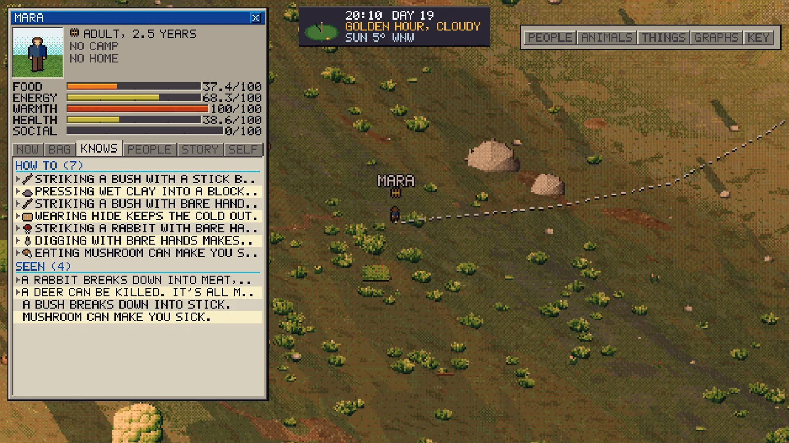
Jev's rulings become the world's laws
Rules can't cover every pair. When someone tries something they don't (bind a mushroom to a fish, heat reeds in water), Jev answers a few typed questions about the physical result: would it hold together, how sharp would it be, is it edible now. Every ruling is cached as a world law keyed by the operation and the rounded properties of the inputs, so the next time anyone tries the same thing the law applies without a call. The physics grows as people explore it, and stays consistent. Laws are world facts; knowing one is per person. Offline, nothing the rules don't cover comes of an attempt, because random answers would write nonsense into the laws.
Naming things from WordNet words
Jev can't invent a word, so a made thing starts with a working name that says what it is: "sharp stone lashed to a stick", then "sharp stone lashed to a stick for felling trees" once people use it. After it has been made three times, Jev picks a common word from about 3,000 real object nouns from WordNet in 17 kinds of thing (cutting tool, vessel, rope, shelter, light, trap): first the kind, then favourites from lists of 240, then the final word. "None of these" keeps the descriptive name; a word already taken gets its material in front ("bone knife").
06Theories and tests
When something that has worked for them fails, people look for what was different, settle on a theory, act on it, test it, and sometimes let it go.
- Built records, suspicion, theories, tests, letting go
Revised October 5 and 6, over four rounds
The probes in chapter 13 found three faults in these rules: people blamed what merely comes with the true cause, held on to a cause that had stopped mattering, and drifted back from the faster of two ways. Four changes fixed them: records where the latest tries counted most (since undone), comparing like with like, testing one theory at a time, and marking a way down only where it has truly done worse. A second round then found that these changes fit lighting fires far better than planting, where most of what an island can teach lies, and a third kept six small fixes and found why nothing bigger held. The fourth took luck out of whether a try comes off (chapter 5) and gave people records that never forget: every try counts whole, however long ago, and a success where they thought it impossible makes them wonder what was different rather than simply drop the theory. All of it is below, and chapter 13 has the rounds.
Records that never forget
Every time someone does what they believe works, the attempt is noted all told, against each condition they could see (rain, dark, freezing cold, a strong wind, no fish swimming close by for what's dipped in the water, and for what's done to the ground, the spot itself: the ground, the shade of trees over it, dry ground, bushes and trees crowded round), and against the mix of all of them it was done in, the spot too: dark and raining, dark and dry, in the shade on dry grassland in the rain.
Every try stays in the record whole, however long ago it was. A failure isn't forgotten because the thing has since worked, nor a success because it has since failed, and what changes their mind is the whole of what they've seen. Giving up a theory leaves the record as it was. Until October 6 each try counted for a little less with every try after it (0.95 of what it counted before), so a record was mostly the last twenty or so tries, and what a way used to do was forgotten once it did otherwise. The operator's call was that people never forget a try, and learn instead that what they thought impossible isn't. How long a way takes them still leans on their latest twenty or so tries, so one try that dragged on doesn't make it look slow for good.
Suspicion, like for like
When something that has worked for them fails, a condition they were in becomes a suspect once it has failed them there more than once and done worse there than without it by more than chance would make it (a standard error of the difference, by their own counts), or when the failure itself points at it (the tinder too damp to catch) and it has done no better there. A condition that a theory of theirs holding there already names isn't suspected: to someone who thinks it won't work in the rain unless the wind is up, a spark dying in the calm rain is the rain's.
For the weather, the comparison is like for like: each mix of the weather with the condition in it is set against the same mix without it, pooled by how much each can tell. Where the mix without it is thin or has never come, it is made up from their record without the condition all told, as if it held four tries of that, so a condition never seen apart from another is suspected along with it until tries apart tell them which. Tries where a theory of theirs about something else holds are set aside: to someone who blames the rain, a spark dying in the rain at night says nothing about the dark. So where the rain falls mostly at night, the dark stays a suspect only until sparks struck dark and dry catch as often as by day; then the rain takes the blame alone. Jev is shown the same comparison: "It was dark (it has worked 5 of 18 times for them like that, and 12 of 22 otherwise; when it was dark and dry it has worked 5 of 8 times, and 12 of 20 when it was light and dry)". Offline, the guess leans on the same record.
They settle on one suspect, or on bad luck, or on no idea. What they settle on is a theory ("they think it won't work in the rain"), which what they see later can narrow to several conditions together or give an exception ("in the rain, unless a strong wind is blowing"), shown with the record it rests on, taught with it, and respected by the planner however badly they need it. Freezing in the rain, someone who thinks fire won't light in it asks for help rather than rubbing wet sticks until they drop. Letting the desperate try anyway was tried: a whole camp froze rubbing sticks in a winter rain.
Tests, one theory at a time
When they aren't in trouble (not starving, freezing, hurt or spent), someone standing where a theory of theirs holds can set out to try it anyway, to see whether it really won't work. It is likelier the less the theory rests on: its tries where it holds, by how much worse it has done there, over ten (over a half until October 6), so one resting on twenty failures is still tested now and then and one resting on a hundred isn't out of mind. It is twice as likely where it has worked before, since it isn't impossible there and they'd like to know when it does, and likelier the more curious, doubting or clever they are. They test a theory only where nothing else they blame holds as well, since a spark that dies in the rain at night says nothing about the dark to someone who blames the rain, and of the theories they could put to the test right then, the one resting on least. A test is one try, and counts as one only while the theory holds: if the weather has passed by the time they strike, it's an ordinary try. One that fails is one more failure the theory rests on, so tests of it grow rarer.
When it works where they thought it couldn't
Only a try where a theory holds can tell against it, never the record it was formed on. When it works where they thought it wouldn't, by their own hand or before their eyes, the theory goes only if it has worked there at least as often as it failed, counting this time; one they were told, with no failures of their own behind it, goes at once. Watching someone else do it counts the same way, on the watcher's own record. Otherwise the failures it rests on aren't forgotten: it isn't impossible there after all, and they wonder what was different this time. It may be something that held now and never with those failures ("A strong wind was blowing this time, and never when it failed there"), or something that held with all of them and not now ("Not this time: every time it failed there, it was dark"). What they settle on narrows the theory to just where it fails ("it won't work in the rain, unless a strong wind is blowing"). If nothing, they know only that it works there now and then, and keep clear of it there as before unless they set out to find out more. An exception that then fails as often as it has worked there is given up, and the theory goes back to what it was.
A theory also goes when, over a few tries where it holds, it has come to do about as well as where it doesn't, like for like, having worked there at least once; a spark that has never once caught in the rain keeps the theory however rarely it catches anywhere. With nothing forgotten, a long record of sparks dying in the rain gives way, if the rain ever stopped mattering, only as the sparks that catch there come to look no worse than anywhere else, like for like. Giving a theory up leaves the record as it was. A plan made before the weather turned doesn't carry them into what they think won't work in it: they stop before starting, or partway once it comes on.
Choosing between ways
Between ways of doing the same thing, the planner takes the cheapest, weighing each by how long it takes them over its odds. The odds are its record all told (or on that ground), marked down to its record in a condition they're in only where it has done worse there than chance would make it, so a few unlucky tries in the dark don't make one way look worse than another. Some hope is added for what they've hardly tried, which is what gets it tried; a way someone was taught looks to them like any way they haven't tried yet, no more certain. So mistakes are made, and corrected, and what people do drifts toward what works best where and when they do it.
Results that show days later
Some things only show what they did days on, like a seed pushed into the ground. Done, it counts as tried and nothing more; it counts as having worked when it comes up, or against them if it withers. The first one that comes up teaches them it takes days: "A berry pushed into the ground grows into a bush, about 3 days later." It used to be scored the moment the seed went in, as a failure, and people blamed the rain or the dark for it.
Knowing ground
Planting, digging and watering are noted against the spot they were done on, so people come to think berries won't come up on sand or in the shade, or that a pit can't be dug on bare rock. To the planner every kind of ground within a hundred metres is a way of its own: someone whose berries come up only now and then on the forest floor tries the grassland over the rise, and goes back if it does worse. Berries planted in summer came up 28 of 30 on grassland, 23 on scrub, 20 on the forest floor, 14 in marsh, 11 on sand, 8 on grass with outcrops and none on bare rock.
What the answer key says is true
Rain hurts lighting a fire by rubbing or striking; crowding, shade and rocky ground hurt planting, and rocky ground digging; the dark and the wind hurt none of them. The key is found by experiment on each island, not written down (chapter 13).
07Making things
From knapped stone to a forged blade, every step is a property meeting a rule. The chain is long enough that it only climbs where knowledge is passed on.
- Built the physics of every step
- Partly built worlds climbing it
- Planned carrying water
Fire has a heat level
An open fire is 1.0. Ringed with stone it is 1.3. A ringed fire burning charcoal is 2.0, and 2.5 with air blown in from anything soft and hollow used as bellows (a hide bag, a woven mat). Heat changes happen only above a threshold, so pots need at least a ringed hearth.
| Change | Heat needed |
|---|---|
| Cook food, melt resin | 0.8 |
| Fire clay | 1.2 |
| Soften metal for working | 1.5 |
| Smelt ore into a metal lump | 2.2 |
| Wood to charcoal | A log in a ringed fire covered over with stones or clay |
Hot working. Anything hot and plastic can be shaped by striking it with something heavy and hard. Each blow closes the gap between the edge's sharpness and 1 by a fifth of the striker's weight times its hardness, up to 30 blows. A metal lump hammered at a charcoal fire becomes a blade sharper than flint and far tougher. Hammering cold metal only dents it.
Grain, keeping food, bows and fibre crafts
Added after headless runs showed worlds stalling at fire and shelter. Grain is stripped from grass while it ripens; ground on a harder stone it becomes meal, dipped in water dough, held over a fire bread that keeps five days. Food held in the smoke of a covered fire keeps about eight times as long. A pointed shaft shot from a stick strung with cord flies twice as far as a throw. A soft sheet tied with cord closes into a bag, a woven reed mat into a basket that can scoop fish. Hides laced together make a wrap warmer than any one of them.
Shelters that grow
Sticks and grass lean into a lean-to that sleeps two and is down after a few days of rain. No amount more of them makes a hut: weather tells on a flimsy shelter far more than a sturdy one. Stones stacked into a lean-to make it sturdier, a dozen with its frame make a walled lodge, and a lodge grows with what goes into it, past six sleepers a longhouse with a door every eight metres or so. Someone fond of another can ask to move in where there's room.
Where worlds get to
The physics for every step above is in the code. How far a world's people climb is another matter, and it is what scripts/tech.ts measures: the first day each milestone holds, who is alive, what killed the rest and where plans fail. In the play page on seed 1, by day 19 the five people had stacked stone piles and dug pits but had no fire yet. A resin-sealed basket is watertight, but nothing carries water yet: that is deferred.
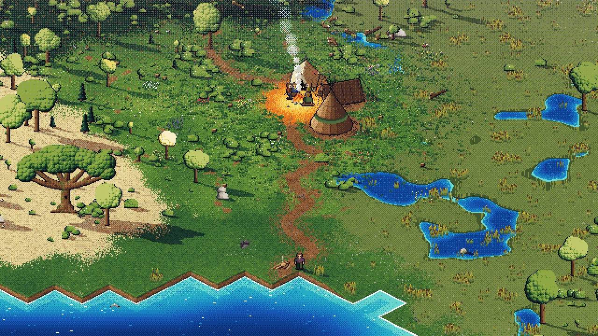
08Groups and norms
Nobody is assigned to a group and nobody writes the rules. Camps are noticed, customs build up from what a camp did last time, and leaders are whoever gets followed.
- Built camps, incidents, precedents, customs, leaders, shared stores
- Planned voting, roles, feasts
Camps form on their own
Once a day, code looks at who lives near whom. People whose homes are within 8 tiles and who don't dislike each other are linked, and each connected cluster of three or more is a camp. A camp keeps its identity by matching members, so it can grow, split over a feud or merge with a neighbour. It starts with a place name from its founder and the nearest landmark ("Mara's camp by the lake"); after a season Jev picks a lasting name from the lexicon's place words.
Incidents and precedents
Anything one person does that lands on another, seen by at least one member, is an incident: a theft, a raid, an insult, refusing food, a fire someone lit burning a home, but also a gift, tending, teaching. Code records its features, not a verdict: against a member, kin or a child, how much it cost, how desperate the doer was, how hard times were, whether they've done it before.
The camp then answers it. When there is a leader, the leader decides; otherwise the person hurt, or the witness whose rulings have been followed most. Jev chooses from five responses: let it go, scold, make it right, shun or drive out, seeing the incident, the people and the camp's most similar precedents. The pair becomes a precedent, so a camp that shunned the last hungry thief will probably shun the next one, though a sympathetic leader can break from it.
What happens around here
Taking from a neighbour's store: shunned 3 times, let go once.
Spoken at an evening fire: "Here, anyone who raids a neighbour's home is driven out."
Customs and leaders
Code summarises each camp's precedents by act, and those summaries go into every member's state as "what happens around here". When the same response meets the same kind of act at least three times with no exceptions, a member may put it into words at an evening fire, with another member near. A spoken custom travels by gossip and teaching, and fades once broken at least twice and more often than it held.
Following and defying are watched for three days after a ruling. Each person's standing is the share of their last 12 rulings that others followed. A leader needs at least 60% followed and keeps the role until they fall under half or someone clearly outdoes them. Different camps end up with different customs: one tolerates stealing from outsiders and exiles for stealing from kin, another lets the starving take food in winter.
09The living world
Simple systems that collide: fire meets drought, wolves follow deer, food rots, crowds sicken, seeds take root where they fit.
- Built animals, plants, fire, decay, disease, weather
- Planned a written chronicle
- Animals go by the air and the day, not a calendar: grazers find grass where the snow leaves it, the cold burns what they've eaten, and young are born as the days draw out past eleven hours. Deer flee people; wolves hunt deer and, in hard cold, people. Overhunting crashes a population.
- Plants grow by the air's warmth, the soil's water, light and nourishment. Berries regrow, trees shed seed, birds carry berries, and what lands where it fits may take root, so clearings fill in. A seedling wilts and dies if grown plants nearby take its water.
- Fire spreads to dry, flammable things nearby, faster in wind, slower after rain. A campfire beside a lean-to can burn it down; a forest fire clears land and drives off animals. Lightning can light a tree, which is a fire anyone can warm up by or take a flame from.
- Decay: food spoils in days unless dried or smoked; tools wear; shelters weaken in weather. Decay is what makes storage, preservation and upkeep worth inventing.
- Disease: toxic or rotten food makes people sick, and crowds with no well nearby fall sick and pass it on.
World events feed the same memory, bonds and gossip as everything else. A fire that burns someone's hut leaves a "destroyed my home" bond with whoever lit it; a wolf fought off leaves "saved my life" and makes living together safer than living alone.
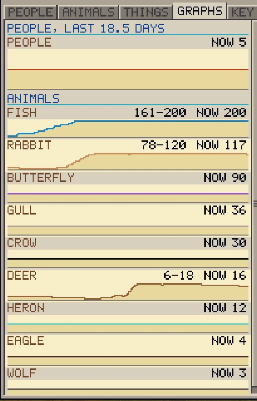
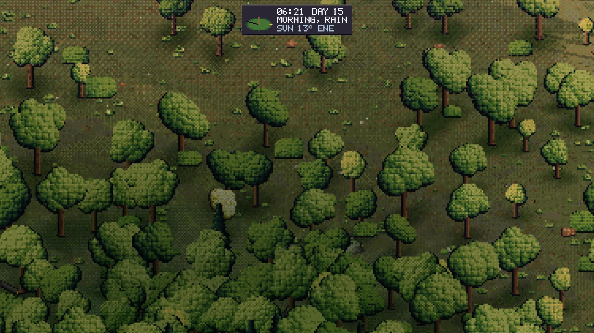
A short chronicle written once an in-game week by a language model, for the player to read, is an optional later idea. The simulation never depends on it.
10The brain
Jev never picks an action. It picks a goal or a reading of a situation, with odds, and code does the rest.
- Built Jev questions, offline brain, cost tracking
Every question to Jev carries a state (who the person is, their traits and needs, what they know works, what they can see and who is near, the weather and the light) and one or more typed questions. There are three kinds:
- A choice from named options, answered with a probability for each: "Given who Mara is, what she needs, what she knows how to do, and who is around, what will she most likely do next?"
- A yes or no, answered with the odds of yes: "From everything Mara has seen and heard, is Tamsin generous?"
- A score on a scale: "How does this change how much Mara likes Tamsin?"
What Jev is asked
| When | Questions |
|---|---|
| Deciding what to do | A choice of goal; who they'd seek out; who they'd act against |
| Tinkering | Which combination they'd most likely try |
| Something that worked failed | What they make of it: a condition, bad luck, or no idea |
| Being asked, offered or insulted | How they respond |
| After a dealing | The bond it leaves, change in feeling and trust (scores), the label, a yes or no for each trait belief |
| Trying what the rules don't cover | Would it make a usable thing (yes or no); how sharp, hard or binding (scores) |
| Naming | What kind of thing it is; then the word |
| A camp's incident | The response; whether the doer would comply (yes or no) |
The offline brain
The offline brain stands in for Jev's judgment, so worlds can run headless for nothing. It answers the same questions at random, leaning the way Jev would: traits pull toward social acts, acts against someone need a grudge, replies lean on how the one answering feels, a theory leans on the person's own record, and the colder they get the more the ways to get warm outweigh everything else. Every test gate runs on it. It never writes a new world law.
What it costs
A decision is about 1,300 input tokens. In the probe worlds, Jev is asked about 90 times per person per day, about 180,000 tokens; a full tier of probes runs to millions of tokens even at two seeds, three people and a day, so it runs on demand, never on a schedule. The play page can think with Jev through a relay that adds the key server-side, at most 300 questions a minute and 16 at once, after warming the world with the offline brain. Most attempts in play hit a rule or a cached law and never reach Jev.
11Seeing inside
Everything the simulation decides is recorded, so any surprise can be traced back to its cause.
- Built trace, Jev log, debug API and page, history page, inspector
- The trace: every plan, interrupt, physics result (with its force, focus, damage, chance and heat), belief change, fire spread, weather change and animal attack, in a ring buffer and
data/logs/trace.jsonl. - The Jev log: every call with its full state, questions, answers, latency and tokens, in
data/logs/jev.jsonl. - The debug API:
api/debug/stats(populations, weather, per-system tick cost, Jev cost),jev,trace(by system, person, kind),laws(each law and who believes it, mistaken versions too),kinds,rulingsandstate.debug.htmlshows all of it. - The history page: every day of the world in rows (technology, survival, social, conflict, camps, life, the wild), with seals for milestones; tap a day to list everything from it.
- The command line:
bun scripts/inspect.tsreads the live server;NOMADS_BRAIN=random bun scripts/run.ts --ticks N --seed Sruns a whole world offline and prints every law, invention and belief. - The play page's inspector: click anyone or anything for its window, with tabs for now, bag, knows, people, story and self; the world window lists everyone and everything, with population graphs and the key to the map's markers.
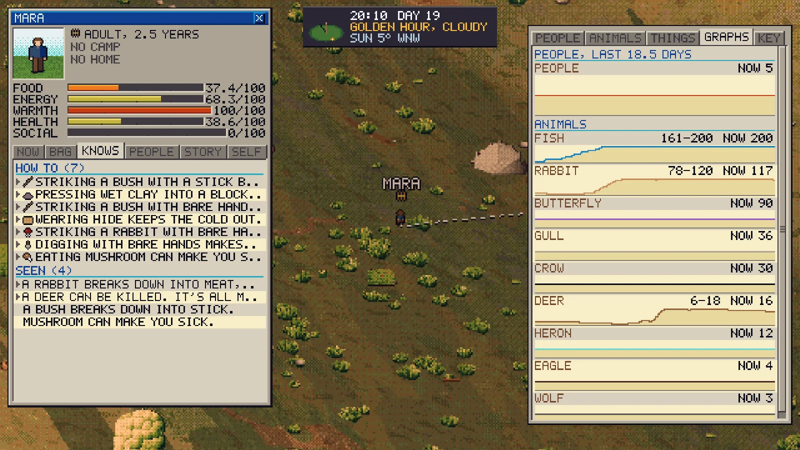
12The play page and the look
Isometric pixel art in the spirit of Transport Tycoon, drawn from the live sim: every tree, rock and person on screen is one the simulation holds.
- Built renderer, camera, inspector, art direction
The play page runs the real sim in the browser with the offline brain: no server, no Jev bill, and the island matches the renderer because both grow it in one engine. The renderer bakes world-anchored chunks in workers and draws every frame on the GPU through WebGL2, over nine zoom levels and eight bearings. The sun casts shadows that stretch across valleys toward evening, ambient occlusion darkens the folds of the ground and the floor of the woods, and heights are drawn at 1.5 times true, which reads as hills without turning the eroded ridges into needles.
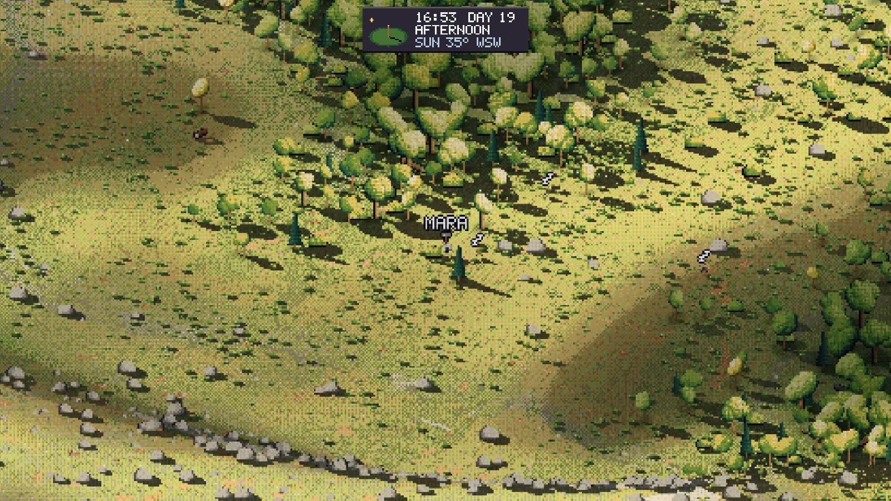
Expedition Morning
The look was found the way a game art team settles one: a brief, a reference board, pillars, exploration, readability checks, a style guide and critique rounds. The brief was the operator's: "A world full of possibilities and adventure", small SimCity people, the land as the star, no interface. The direction takes Transport Tycoon's clarity, lush turquoise shallows and dawn's warm low sun, with 2× pixels and clustered dressing.
| Pillar | The rule |
|---|---|
| A horizon of promise | Every view shows somewhere you haven't been: a peak, a lake, smoke, birds over a headland. |
| The clarity of a toy | Every tile reads at a glance: one light, three tones a face, distinct silhouettes. It must survive a squint. |
| A living island | Nothing is still: smoke, surf, fish, deer, birds, people at work. |
| Rich in clusters | Detail gathers into little stories, with quiet ground between them. |
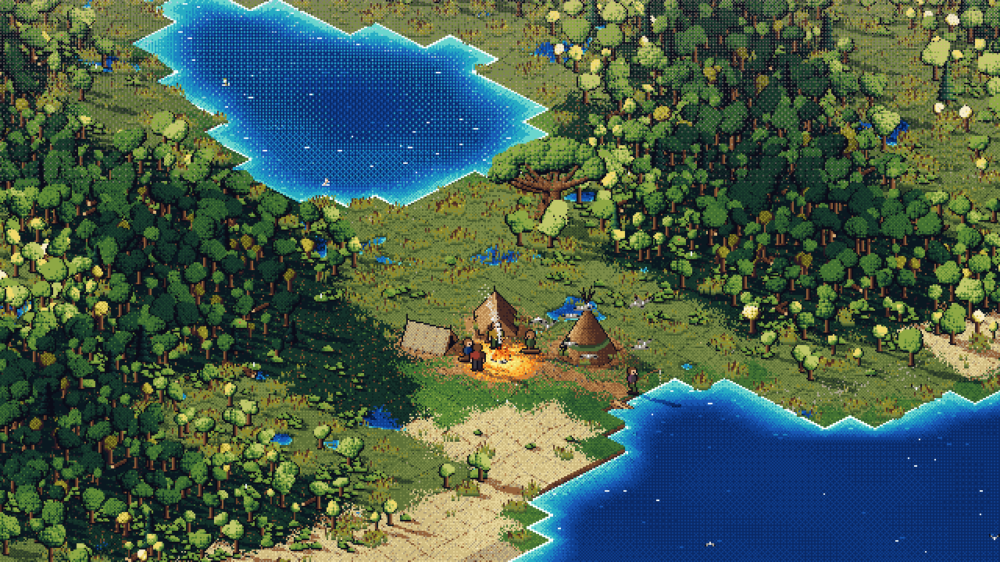
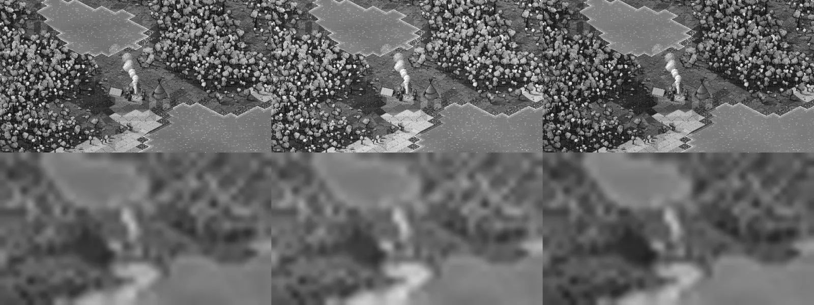
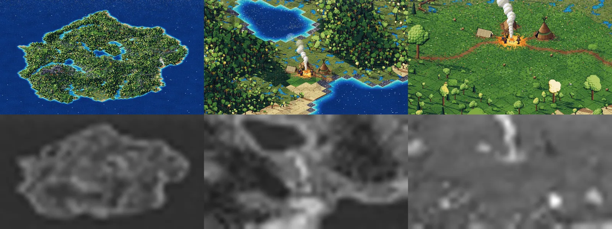
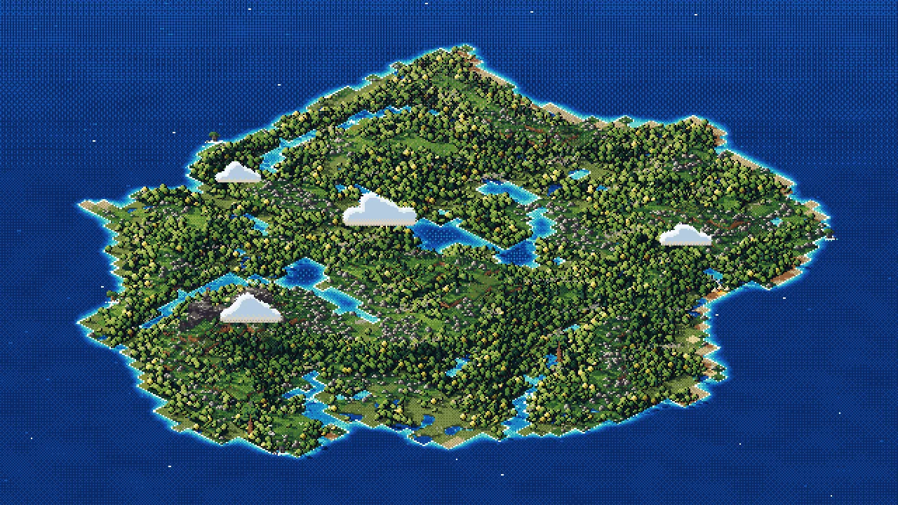

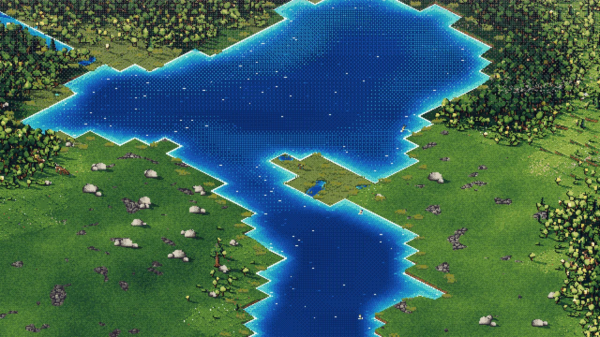
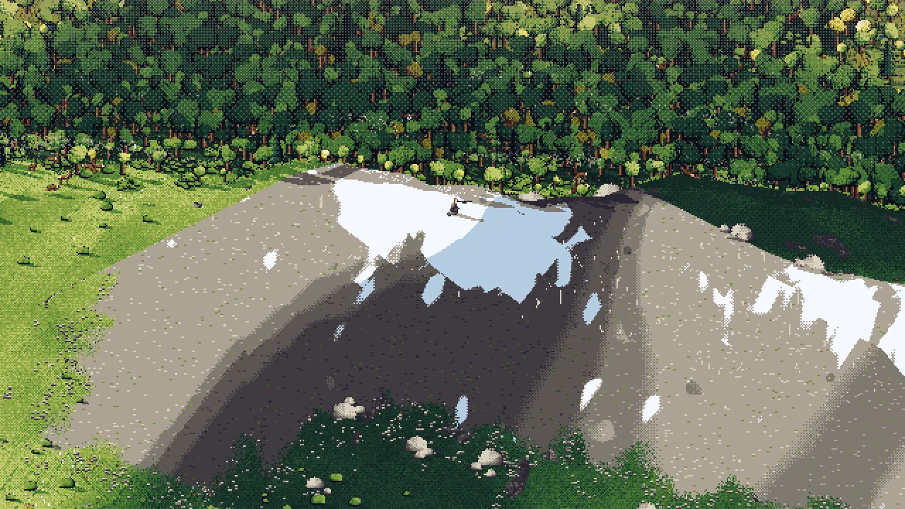
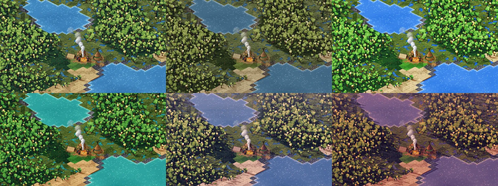
The sprite sheet and an earlier critique round
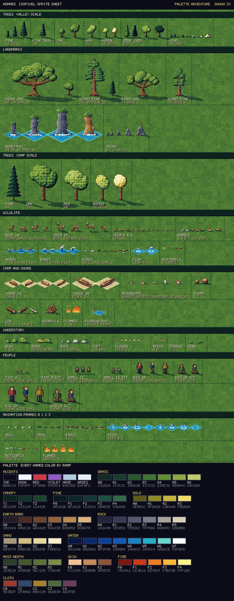
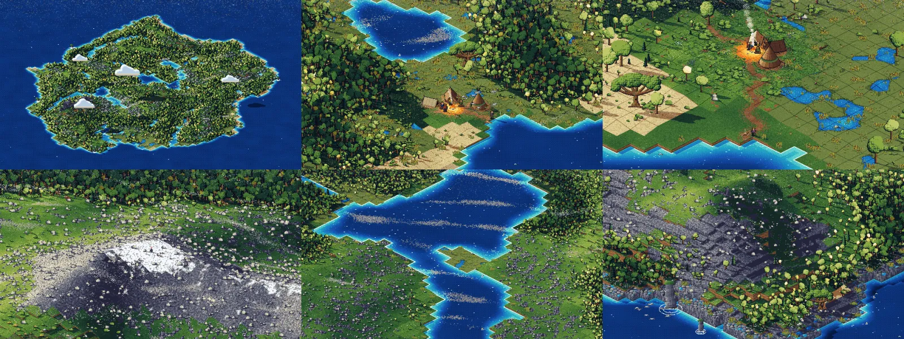
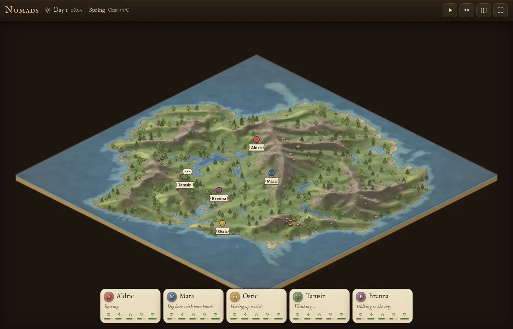
13Testing that people learn
Whether people come to what's true, and how fast, is tested rather than read off a run, and every change to the sim is held to the last good build.
- Built probes, gate, answer key, whole worlds, live monitor
The bar the learning fixes were held to
Set before any fix was made: every claim of every probe, in the world as it is and flipped, holds over ten seeds with a 95% interval; no number is worse than the baseline before the fixes by more than its tolerance, with the whole 99% interval of the change on the worse side; and whole worlds show no regression against theirs. The claims were raised to meet it first: late tries make the faster of two ways more than 85% of the time, and more often than their first five tries; more than 85% come to blame the true cause where the rain falls mostly at night, and fewer than one in four the one that comes with it; when the cause changes, fewer than three in ten still blame the old one at the end and at least two in three the new one.
- Runs replay. Headless runs replace
Math.randomwith one stream seeded from the island, so with the offline brain a seed runs the same world every time, and a build and its baseline on the same seed share their draws. - The world writes the answer key. scripts/truth.ts tries every way of doing things people used, on the island itself, through a year of its weather, ice and soil, at random spots and hours, and records how often each works in each condition and out of it. Dark and cold, which come together, are each judged where the other doesn't hold. Nothing about what hurts what is written down, so a change to the physics changes the key.
- One currency. Runs are scored against the key: tries made where they can't work, true and false theories held, theories formed again after being dropped, and the ticks lost to a slower way someone knew or a faster way the world allows.
- Probes. Small staged worlds where the truth is set: six people on open ground in summer, wanting a fire. Choose: two ways to a fire, one truly faster. Blame: sparks die in one kind of weather. Confounded: the rain falls mostly at night and only one of the two kills sparks. Recover: what kills sparks changes halfway. Spread: some know the true cause, some were told a false one. Three remain of the five the second round added. Two: rain and wind both kill sparks. Rare: what kills sparks comes one hour in twelve. Seed, the first probe of planting: a plot each with an oak's shade over part of it and a bush crowding another, seedlings that never come up in the shade and come up seven in ten elsewhere, shown two days later and silently, and a berry to plant every four hours or, sparse, once a day, and two, once a day where both the shade and the crowding wither seedlings. The fourth round, with nothing left to luck (chapter 5), dropped the probe of bad luck and the one where the rain only halved the sparks that catch, and added except: sparks die in the rain unless the wind is up, and nothing says so. Confounded, recover, rare and except run ten days, the planting probes twenty. Every probe of a cause reports acc, how often what their theories would have them do matches whether it would work, over the probe's own hours and spots, beside needless, where they'd hold back though it would work, and blind, where they'd go ahead though it can't, at the midpoint and the end. Each also runs flipped, through src/sim/rules.ts, the one place the physics can be set otherwise.
- The gate.
bun scripts/evals.ts probesruns every probe on ten seeds and compares each number with the baseline seed by seed. One worse by more than its tolerance, with the whole 99% interval of the change on the worse side, fails the build; so does losing a claim the baseline met. A passing build that improves something becomes the baseline, so the bar only rises. - Whole worlds between a floor and a ceiling.
bun scripts/evals.ts worldsruns whole worlds with learning as it is, off (nobody forms a theory) and known from the start (everyone holds the key's true theories), and reports how much of the gap the real people close. A harder world moves both ends, so this tells a worse learner from a harder world. - The live monitor.
bun scripts/evals.ts livescores the live world's own trace the same way, nightly with the worlds tier, from a checkout of its own. - The cheap brain against the real one.
bun scripts/evals.ts probes --brain jevruns the probes with Jev, on demand;proxysays whether the two brains moved the same way between builds.
What the tests found
From evals/2026-10-07T02-51-32-684Z-probes-random-5ca7fe6944.json: 20 seeds of 5 days with 6 people, the offline brain, commit 5ca7fe6944, 2026-10-07. 138 of 142 claims hold (128 of 142 at b5a5be1e45); open: choose/flipped learn, hearsay/real spreads, hearsay/real knows, hearsay/flipped spreads.
The numbers
| Probe | Share of people who | As it is | Flipped | Before, as it is | Before, flipped |
|---|---|---|---|---|---|
| choose | first five tries made the faster way | 80% | 100% | 80% | 100% |
| choose | late tries made the faster way | 100% | 100% | 100% | 100% |
| blame | blame what truly kills sparks | 100% | 100% | 100% | 100% |
| blame | blame something that doesn't | 0% | 0% | 0% | 0% |
| blame | theories call it right, at the end | 100% | 100% | 100% | 100% |
| confounded | blame the true cause | 100% | 99% | 100% | 100% |
| confounded | also blame the one that comes with it | 0% | 1% | 0% | 0% |
| recover | blame the new cause by the end | 99% | 100% | 100% | 100% |
| recover | try the old cause again and see it work | 100% | 99% | 100% | 100% |
| spread | blame the true cause by the end | 100% | 100% | 100% | 100% |
| spread | keep the false cause they were told | 0% | 0% | 0% | 0% |
| two | blame both | 100% | 99% | 100% | 100% |
| except | rule it out just where it fails | 100% | 99% | 0% | 0% |
| except | theories call it right, at the end | 100% | 100% | 83% | 81% |
| rare | blame it | 100% | 100% | 100% | 100% |
| seed | blame what withers seedlings | 100% | 100% | 100% | 100% |
| seed | the same, one planting a day | 100% | none | 100% | none |
| seed | the same, shade and crowding both | 94% | none | 87% | none |
| seed | blame the weather for it | 0% | 0% | 0% | 0% |
| seed | theories call it right, at the end | 100% | 100% | 100% | 100% |
| hearsay | pick it up from the two who know | 34% | 59% | 28% | 57% |
| unlearn | keep the false theory they began with | 0% | 0% | 0% | 0% |
| unlearn | the same, one planting a day | 1% | none | 0% | none |
Before the fixes (commit 3bda10e), 15 of the 24 claims held. People came to blame what truly kills their sparks within a third of a day and wasted half as many tries for it, in the flipped world as in this one; a false cause some were told died out, and those who didn't know how learned it. Three things they did badly. Where the rain falls mostly at night, everyone blamed the true cause, but 53% (38% flipped) also blamed the one that comes with it, and kept blaming it. When what kills sparks changed halfway, 42 to 48% still blamed the old cause at the end, and only 57 to 67% came to blame the new one. And between two ways to a fire, only 71% of late tries (81% flipped) took the faster way: one try that dragged on had made it look slow for good.
After them (commit 8272cc8), all 24 claims hold and the gate found nothing worse. Late tries take the faster way 100% of the time (99% flipped), and the time lost per try to the slower way fell from about 1.2 ticks to 0.15. Where the rain falls mostly at night, 98% blame the true cause (93% flipped) and 8% the one that comes with it (7%); in the world as it is they come to the rain in 1.4 days rather than 2.2. When the cause changes, 3 to 5% still blame the old one at the end and everyone comes to blame the new one, wasting fewer tries on it. The one number that moved the wrong way, people blaming something that doesn't matter in the blame probe (7% to 12%), stayed within its tolerance.
From evals/2026-10-07T01-49-50-064Z-worlds-random-5ca7fe6944.json: 12 islands of 60 days, the offline brain, commit 5ca7fe6944, 2026-10-07; the last third of each run.
The numbers
| Island | Off | As it is | Known | Tries wasted, as it is | Tries the key could judge |
|---|---|---|---|---|---|
| 1 | 0.00 | 0.00 | 0.93 | 0% | 100% |
| 2 | 0.00 | 0.20 | 1.73 | 11% | 89% |
| 3 | 0.00 | 0.33 | 0.92 | 12% | 98% |
| 4 | 0.00 | 0.17 | 1.20 | 14% | 100% |
| 5 | 0.00 | 0.00 | 1.00 | 10% | 96% |
| 6 | 0.00 | 0.00 | 0.70 | 21% | 92% |
| 7 | 0.00 | 0.12 | 1.51 | 10% | 100% |
| 8 | 0.00 | 0.97 | 1.98 | 15% | 100% |
| 9 | 0.00 | 0.03 | 3.00 | 12% | 94% |
| 10 | 0.00 | 0.00 | 1.33 | 12% | 81% |
| 11 | 0.00 | 0.40 | 0.00 | 21% | 100% |
| 12 | 0.00 | 0.25 | 1.97 | 8% | 96% |
In whole worlds the fixes passed the gate too, but the numbers say little either way. The share of late tries made where they can't work fell from 9% to 1%, and that is one island whose people had all died by day 31 before the fixes. The ticks lost per try to a slower way fell from 0.32 to 0.12, and that comes from each build working out its own answer key: scored under one key, it didn't change. True theories held fell from 0.18 a person-day to 0.06 (knowing from the start gives 4.7), all of it that same island, whose people now live to day 60 and hold none. The second round, below, found why so little is learned in whole worlds.
The gate catches what matters. A bug planted on purpose, offering tests only where a theory doesn't apply, failed it: in the flipped blame probe people came to blame causes that don't matter (none before, 15% with it). It also caught the first try at these fixes: comparing strictly like for like left some people too little evidence to blame anything where the rain falls mostly at night, and the claim that nearly everyone blames the true cause fell to 90%, so a thin record now borrows from the record all told.
The probes run on the offline brain; Jev is looked at by hand. The first look (one seed, two days, three people, about 12 million tokens) had Jev's people blame the bystander in the confounded probe none of the time, where the offline brain's did a third of the time. A second look just before the fixes found Jev's people drifting off the faster way too, 41% of late tries against 80% of their first five (51% against 87% flipped), so that fault looks like the rules', not the offline brain's. One seed is too few to say more, and the look after the fixes waits on TypeSafe credits.
The second round
A second round went looking for what the first five probes can't see. Five new probes went into the gate, five ran again over fifteen days, every probe ran with three people instead of six, a code review went through the new rules, and the whole worlds' records were replayed through the rules as they were before the fixes and after.
What holds. Two true causes are both blamed by everyone, and setting aside weather already blamed never kept anyone from the second. A cause that comes one hour in twelve is blamed by 98%. With a berry to plant every four hours, everyone comes to blame the shade (or the bushes) within about three days, and with one a day, two in three do within eight. Over fifteen days blame, confounded, recover and two keep every claim, and nothing in the rules goes to NaN or infinity in 3,000 fuzzed histories.
What the first fixes broke. They fit what the fire probes test, a try every few minutes and causes that kill every spark, and hurt what they don't. In whole worlds 97.6% of what an island can teach is about the spot where something is planted or dug, where a planter sees one to a dozen outcomes in sixty days, days after the planting, and a withered seedling says nothing of why. There a spot's record fades with every try of the way, so a rare spot is almost never blamed, a blamed one goes on one lucky seedling after twenty to forty plantings elsewhere, and ground given up on regains full hope after sixty to ninety.
One catch in a mix of weather barely tried, or watching anyone succeed there, drops a true theory about a cause that only lowers the odds: in the weak probe, the rain that halves the sparks is blamed by 7% (the wind, 23%), its theory formed 31 times in one run and dropped 29 times by watching. And on the same evidence the weather is blamed more readily than the ground: a rounding error lets one faded failure count as two, and four tries borrowed at a one-of-one rate make one success look like five. Whole worlds formed theories like "berries won't come up in the rain" (3.8 expected on the same records, against 0.7 under the old rules), and such a theory seals itself, since nobody plants in weather they blame and a planting can't be watched coming up. The planting probe shows it where seed is scarce and the ground poor: with a berry a day and only four in ten coming up elsewhere, 28% come to blame the shade and 35% something else, 23% of them the weather.
What else the probes show. Learning leans on watching others: with three people instead of six, 25% still blame a cause that stopped mattering (8% flipped), and 17 to 25% blame something when nothing matters. Superstition grows with time: over fifteen days 36% come to blame something that doesn't matter (13% over five), much of it new weather, like the first frosts, blamed when it first comes.
What the tests got wrong. Each build works out its own answer key, so the whole-world tier compares builds on different keys: an island that ran exactly the same before and after the fixes showed its regret falling from 0.71 to 0.11. Plantings into conditions that hurt, 51 of 112 (19 of 127 when known from the start), never count as wasted. Nearly half the ceiling is theories nobody on the island had the evidence for. The key's "crowding hurts planting" is likely the shade, since spots are judged all told. And a theory's life in a report runs past its holder's death. These are the next things to fix, and the new probes are already in the gate to hold the fixes to.
The third round
The third round set its bar before touching anything. Every claim that held must still hold, with nothing worse than the last good build. Every probe's "caught" claim must hold: of the people whose own tries show the cause worse beyond chance, more than three in four come to blame it. In weak and seed/poor more people must blame the true cause than anything else, and seed/poor's weather and waste claims must hold. "Most come to blame it" is required only where the evidence itself supports most people blaming it. Superstition must stay under one in four over fifteen days, recover's people must let go with three people instead of six, every fix needs a unit test that fails before it, and whole worlds must show no step back on one shared key. It was not met: what follows says how far it got, and why.
The tests got sharper first. Every probe now reports what the evidence would support beside what people came to. Evident is the share of people whose own tries show the cause worse than its absence beyond chance, as a statistician holding every try would judge it, and caught is the share of those who came to blame it. That showed the weak probe's problem is the rules, not thin evidence: more than half its people had the evidence, and only 13% and 26% of them blamed the cause. In the poor-ground planting probe the evidence itself is thin (12%), so nobody can be asked to find the shade there, but they can be asked not to blame the weather instead. The whole-world tier now compares builds on one answer key, counts plantings into conditions that hurt as waste, and counts a true theory only where someone on the island had the evidence for it. Two new probes went in: hearsay (does a theory pass among planters who already know how to plant? 20% and 10% of them pick it up) and unlearn (do planters let go of a false theory about the weather? with a berry a day, 30% never do).
What landed. Six safe fixes, each with a unit test that fails without it, passed the gate with nothing worse: a rounding error no longer turns one faded failure into two; giving up a theory about the dark keeps the record the rain theory rests on; an old save keeps what it knew about the weather; a way someone was taught looks untried rather than certain; a hint still counts when the failed try sits in weather blamed for something else; and of the theories someone could test right then, the one resting on least gets tested. Whole worlds, scored on one key shared with the build before, came out no worse.
What didn't. Four attempts tried five designs to catch causes that only lower the odds without letting false theories linger, and none met the bar. The best, D2, lets each condition's record fade only with tries in it, holds about fifty tries instead of twenty, lets a theory go on its record only after a try there comes off, counts tries watched as one's own, notices when a cause stops mattering by a running likelihood ratio, and makes a theory given up harder to form again until the record has renewed. It took the weak probe's caught from 16% to 70% and its right from 8% to 47%, kept recover's let-go with three people, and kept false theories near where they were. But it still regressed four lines, left weak's caught short of 75%, and let superstition over fifteen days reach 25%. Making a theory harder to form again (D2b) brings superstition down to 11% and 14%, and weak's caught down with it to 46% and 64%.
The reason is arithmetic. On a record of about fifty tries, a cause that halves the odds at a one-in-four base rate shows about 1.4 standard errors, while noise looked at after every try crosses one standard error often. A theory that says a thing never works can't keep the first and drop the second. A stricter bar on a first theory costs a day of finding the true cause, since first theories form on two or three failures, and starves sparse planting. The next step is in what a theory can say (that a thing works less often somewhere, not never), not in another threshold. D2, D2b and D1c are kept as patches in docs/research/learning-round3.
Found on the way. A false theory about weather that never comes while someone plants can never be tested. A planter's few chances can all go to bad luck: three people whose evidence showed the shade formed no theory at all. Theories don't pass among people who already know how. Frost doesn't change a strike's odds (106 of 300 in hard frost against 110 of 300 in mild air), so cold blamed in long runs is superstition. Jev still has no credits, so the look with Jev waits.
The fourth round
The operator made four calls. Whether a try comes off follows from what anyone trying could notice, and dice decide only how much or how good. People never forget a try. A success where they thought it impossible tells them it isn't: there is some set of conditions that allows it, which they may look for, or they may just keep clear. And people are curious enough to keep trying what they don't fully understand, so that over time their theories tend toward the truth.
The bar came first. No dice decide success, with a test for each verb, and the tech chain still climbs. On every probe of a cause, what people's theories would have them do matches whether it would work at least as often at the end as at the midpoint, more than nine times in ten by the end, and they hold back where it would work no more at the end than at the midpoint. Records are whole and old saves load; a theory that has worked once where it held keeps its record; in the new except probe most people rule it out just where it fails. In recover nearly everyone who blamed the old cause tries it there again, and in whole worlds tests get carried out. Nothing is worse on the probes, in whole worlds or in the unit tests.
No luck. With the physics changed and the old learning rules, every fire probe but except, and every planting probe but seed/two and hearsay, came to everyone right and acc 1.00: when the only reason a try fails is the cause, blaming it is easy. A strike now takes the same blows every time, so in the probes every try ran across the hour's turn of the weather and was decided in other weather than it ended in; a theory that rules out the weather now stops a try partway, as it stops one starting.
Three steps, each run through the whole gate in a worktree of its own. Never forgetting on its own changed almost nothing. A success where they thought it impossible, with theories of several parts and the wondering what was different, passed the gate and took except from right 0.48 and 0.45, exact 0 and acc 0.83 and 0.81 to everyone right, exact 1.00 and 0.95 and acc 1.00, with acc already 0.99 at the midpoint. Curiosity's first form also ended a test whose weather had passed, and that took away the only fires anyone lit at night in two/flipped, so nobody found that the dark kills sparks (right 1.00 to 0.63); such a test now carries on as an ordinary try.
The final rules, on twenty seeds (Chart 1). Except: right and exact 1.00 and 0.99, acc 1.00 both ways at the end, and 0.98 and 1.00 already at the midpoint. Seed/two: exact 0.77 to 0.93, acc 0.93 to 0.98. Recover: nearly everyone tries the old cause again and sees it work, and finds the new cause as fast, but keeps the old one as a theory that it works there only now and then (kept 0.79 and 0.71, not judged), which is what never forgetting means. Everything else is as it was. Two hearsay claims flipped at ten seeds, each on one person; on twenty seeds the final rules pass the gate, nothing worse and no claim lost, and are the new baseline. The tech chain still climbs: 21, 20 and 25 milestones on three islands, against 21, 20 and 19 with the physics alone. Whole worlds on one shared key, twelve islands of sixty days, show nothing worse beyond its interval, but every number leans worse (wasted in the last third 0.12 against 0.09; true theories 0.21 a person-day against 0.29, of a ceiling of 1.36), and waste no longer clearly falls from the first third to the last, so the bar's no-worse in whole worlds is not met. Part of it is curiosity: a planting made as a test counts as waste there, since by the time it comes up nobody's test is on.
Not met. Hearsay's planters wander off their plots to talk, nobody there plants in the shade, and talk doesn't carry theories, so hearsay/real stays at acc 0.81 and its spreading claim stays open. In whole worlds people chose to put a theory to the test 17 times on six islands (10 before), but carried out only about four while the theory held: most rain tests lose the rain while they fetch tinder.
14Code map and glossary
Where each system lives, and the words this doc and the code use.
| Path | What is there |
|---|---|
src/terrain/ | The generator: island.ts (uplift and erosion), geology.ts (rock), climate.ts (rain, sun, warmth, snow, evaporation), water.ts (groundwater, springs, streams), ground.ts (soil), niche.ts (plants' response curves), flora.ts (the scatter) |
src/sim/world.ts, sim.ts | The World and its tick: goals, plans, acts and what follows from them; VERSION starts a new world when bumped |
src/sim/physics.ts, materials.ts, plan.ts | Materials meeting rules; the planner over beliefs |
src/sim/beliefs.ts, rules.ts | Records, theories and tests; the physics set otherwise for probes |
src/sim/brain.ts, traits.ts, lexicon.json | Jev questions and the offline brain; trait words; WordNet nouns for naming |
src/sim/groups.ts, life.ts | Camps, incidents, precedents, customs, leaders; births, ageing and death |
src/sim/sky.ts, light.ts, air.ts, cues.ts | Sun and moon, light, air and the cues plants and animals read |
src/sim/ecology.ts, animals.ts, plants.ts, soil.ts, streams.ts | Fire, spoiling, sickness and trails; animals; plant growth; fertility; water in streams now |
src/sim/space.ts, walk.ts, journeys.ts, inspect.ts, trace.ts | Spatial queries and stocking tiles; walking; people's paths; the inspector's data; the trace |
demo/styles/isopixel/, play/, genesis/ | The renderer, the play page and the generator replay |
scripts/ | run.ts and tech.ts (headless worlds), probes.ts, evals.ts, truth.ts, theory-report.ts (learning tests), demo.ts and play/serve.ts (build and serve the pages), play/*.cjs (renderer checks) |
server.ts, public/ | The live server, its web client, debug.html and history.html |
DESIGN.md, docs/research/ | The engineers' design record; the generator write-up and the artbook |
Glossary
- Jev
- TypeSafe's calibrated judgment model. It answers choices, yes or no questions and scores with probabilities; it never writes text.
- Noul
- Jev's answer to a yes or no question: the probability of yes.
- Offline brain
- The stand-in for Jev that answers at random, leaning the way Jev would. Also called the random brain.
- Tick
- Five minutes of world time; 288 make a day.
- Tile
- A 150 m square, the grain of the game's rules. The island is 128 tiles across.
- Kind
- A type of item with its properties, such as a sharp stone or a cord; made kinds get working names, then words.
- Law
- A cached Jev ruling on something the rules don't cover, applied the same way from then on.
- Belief
- What a person thinks a way of doing something does, with their record of it.
- Theory
- A person's idea that a way fails under one condition, such as rain or shade.
- Test
- One deliberate try in a condition a person blames, to see if the theory holds.
- Precedent
- An incident and the camp's response to it, which later cases lean on.
- Custom
- A pattern in a camp's precedents put into words at a fire.
- Standing
- The share of a person's last 12 rulings that others followed.
- Probe
- A small staged world where the truth is set, used to measure learning.
- Flipped
- A probe with the physics set otherwise, so a learner with the answer written in fails it.
- Answer key
- What truly hurts what on an island, found by trying every way there.
- Gate, baseline
- The probe comparison every change must pass; the last good build it compares with.
- Floor, ceiling
- Whole worlds with learning off and with the truth known from the start.
- Warm
- The ticks the play page runs before it opens, a week by default.
- Bearing
- One of the camera's eight turns round the island.
- Bake
- Drawing a chunk of the world into a texture once, so frames are cheap.
Made from DESIGN.md, docs/research and the code as they stood on October 5, 2026. Pictures and videos are from the play and genesis pages built from this checkout and run with the offline brain, except where a caption says otherwise; the artbook's images are from docs/research. Set in Fraunces, Source Serif 4 and JetBrains Mono.